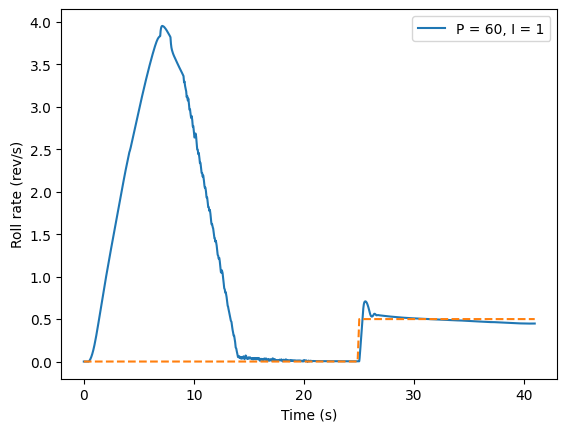

SYNCHRONOUS TRI-BLADE CANARD SYSTEM
AERODYNAMIC ROLL CONTROL FOR HIGH-POWERED ROCKETRY
A rocket launch is only as good as its payload mission...
And if the mission wants good footage, you gotta be ready to rock and (not) roll
High-powered rockets experience extreme forces during launch, accelerating to nearly Mach 2 in less than 10 seconds. With the amount of aerodynamic force in play, any small misalignments in the construction of the rocket can quickly compound into large, uncontrolled movements. In particular, roll - rotation about the rocket’s longitudinal axis - is notoriously annoying and hard to control.

One of our missions with each launch at Duke AERO - Duke University’s collegiate rocketry organization - is to capture beautiful, high-quality flight footage from a camera mounted on the rocket body. However, uncontrolled roll can turn that footage into a dizzying blur. Worse, excessive roll can tangle parachute chords if the rocket is still spinning rapidly at chute deployment.
To address this, our team developed an active roll control system using canards - small, actuated fins mounted forward of the passive tail fins. By adjusting the canards mid-flight, we can induce or counteract roll in real time, allowing for better footage and more stable flights.

In 2024–2025, Duke AERO began developing a roll control system for our 30,000 ft
IREC rocket.
I was tasked with conducting preliminary research into reaction-wheel alternatives,
vibration analysis of the canard design, component manufacturing, analytical calculations, and control
algorithm development.
Canard vs Flywheel?
The first challenge in designing a roll-control system was choosing between a reaction wheel or canards system.
On paper, the elegance of a reaction-wheel system was compelling — no external moving parts, no
messy aerodynamic downstream, ultra-precise control. To test its viability, I built a simplified
analytical model of the rocket, treating it as a near-hoop structure to capture its moment of
inertia. The numbers told a clear story: counteracting a 3 Hz roll rate within half a second
would require a 1.8 kg flywheel spinning at over 5100 RPM.
It was precise. It was powerful.
And it was impractical. The weight and energy demands were too steep for a system meant to fly fast and light. So we pivoted to something leaner, more agile.
We chose canards.
Good (Or Bad) Vibrations...
The canard system uses a compact triple bevel gear transmission, driven by a single central servo to actuate all four blades symmetrically. But bevel gears come with an unavoidable downside: backlash — tiny gaps between gear teeth. At supersonic speeds, this free play becomes a liability. Control-surface flutter can develop, and if oscillations grow beyond the backlash region, vibrations could propagate into the geartrain and surrounding components, risking structural damage.
To understand this risk, I developed a time-marching simulation to model the system’s vibrational behavior throughout the rocket’s flight. The key variable was the pivot point of the canard blade. When aligned with both the blade’s center of pressure and center of mass, the blade becomes both statically and dynamically balanced. In this configuration, oscillations are self-limiting — flutter may occur, but it never grows beyond the mechanical slack of the system. But achieving this balance demands complex mass-tuning—fine counterweights, reshaped internals—adding fragility we couldn’t afford.
Instead, we went with a practical fix: damping. High-viscosity automotive grease filled the gear gaps and resisted rapid motion, cutting oscillations at the source.
Simple. Effective. Flight-ready.
Putting it all together
Single-piece Aluminum Housing
Rigid and reliable
Three-bar Linkage Actuation
Elegant solution for perfectly even actuation
Bevel Gear Train
Compact transmission
Forged Carbon Fiber Blades
Lightweight yet hardy
The canard assembly was designed by Connor Mitchell, consisting of upwards of 90+ parts, the majority of which are manufactured in-house. I took charge of the manufacturing of the output and pinion shafts, primary linkages, servo horn, and blade alignment jig.
Stainless Steel Shafts
Both the pinion and output shafts are made of 304 Stainless Steel. The operations on both shafts are simple, majority requiring lathe operations, but the small size of both shafts (less than 2" in length) and an inteference fit with an external bearing requires extreme precision down to less than 0.001"
Hover over the parts to see the order of operations.
The finished shafts - drilled, tapped, and keyed - in all their glory.
Aluminum Linkages & Servo Horn
The primary linkages and servo horn are made of 6061 Aluminum. The simple design of these parts mean they can easily be waterjet from a 1/4" stock plate and finished up with a few passes on the mill.
The holes on the linkages are then reamed for a clearance fit with a bushing, while the holes on the servo horn are tapped.
Blade Alignment Jig
The blade alignment jig is a simple 3D-printed tool I designed to precisely align the canard blades with the output shaft during assembly. Accurate alignment is crucial — any angular offset can cause uneven aerodynamic forces which can lead to uncontrolled pitching moments.
The jig securely holds each blade relative to the shaft, allowing us to accurately drill and tap blade set screw holes during assembly. This ensures all three blades are perfectly vertical in their neutral position for optimal flight performance.
The control stackup in the desert, ready for flight.
A gentle nudge is all you need
To determine the degree of actuation needed for the canard blade, I developed a set of analytical calculation sheet to determine the amount of roll induced by the canard system. The calculations are based on the aerodynamic forces acting on the canard blades, and the resulting roll moment on the rocket. The calculations take into account the rocket's mass, inertia, and the canard blade's lift coefficient in supersonic and subsonic flight as simulated in ANSYS by Rohan Joshi. The result shows that, to correct a 3Hz roll rate, the canards only need to deflect their angle of attack by ±6 degrees. This helps us establish a mechanical hardstop in the system to prevent over-actuation and damaging the canard blades from excessive aerodynamic loading.
Now we gotta steer this thing
The final piece of the puzzle in tying the system together was choosing a control method. Writing control code for a rocket is especially challenging—there’s no room for trial and error; it has to work the first time. Fortunately, one tool made this possible: RocketPy, a full 6-DOF rocket flight simulation library written in Python.
But there was a catch: no one had ever implemented canard-based control in RocketPy before.
While the framework supports closed-loop simulations and includes documentation for airbrake systems, nothing existed for more complex aerodynamic surfaces like canards. That meant I had to start from scratch. After a week of digging through the documentation and testing different modules, I managed to piece together a custom framework that allowed me to simulate closed-loop control of canard deployment angles.
With the simulation environment in place, the next step was choosing a control algorithm. Since roll control is relatively linear, I started with a simple bang-bang controller. It worked, but the canard movements were overly aggressive and caused significant oscillation. I then tried a high-gain proportional (P-only) controller, which reduced overshoot but introduced steady-state error—and the canards still moved sharply when control kicked in. Next, I experimented with a medium-high P controller and a linear ramp setpoint to gradually decrease roll rate over five seconds before holding it at zero. This smoothed out the response but still left some steady-state error. Finally, I implemented a PI controller with the same ramped setpoint, which eliminated steady-state error and produced much smoother canard movements. This configuration proved to be the most stable and effective and was chosen as the control algorithm for launch.

The final step is to tune the system to determine the values of P & I. Due to the inherent high stability of the rocket, tuning methods that use oscillations such as Ziegler Nichols are out of the question, so the parameters had to be manually tuned using a simple setpoint step-response test in the simulation. These chosen parameters are then stress-tested with simulations incorporating environmental factors such as sudden wind gusts and varying degrees of fin misalignment. The values demonstrated good control authority over a large range of conditions and are thus chosen for flight.
IREC 2025
At IREC 2025, Duke AERO was one of 20 teams out of over 200 chosen to give a podium presentation to showcase our canard system. I was a member of the team that presented our work to a panel of judges, peers and livestream audience. The presentation was very well received, and we got helpful feedback from the judges and peers on our work.
The IREC 2025 launch was the culmination of our effort. The motor burn was nominal and the rocket demonstrated good off-the-rail stability. However, a structural event as the rocket approached max q led to loss of the fins and causing overall vehicle breakup. The event happened before burnout, so the canards were never actuated, and we unfortunately was not able to observe the canard system in action.
Despite this, the launch proved overall aerodynamic stability of the canard, and we recovered all components, with the canard section in surprisingly good shape. Still, the team is incredibly proud of the work that went into this rocket - from design to launch.